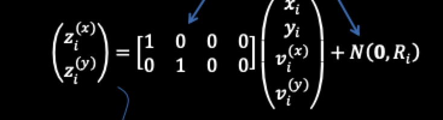
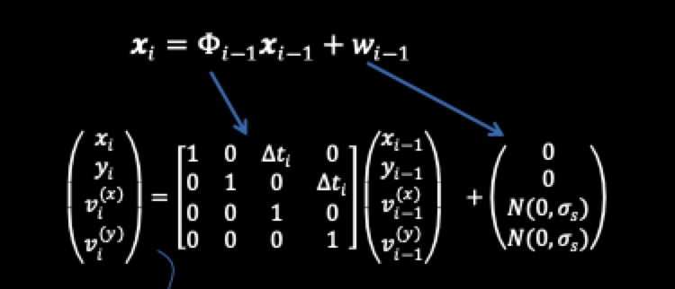
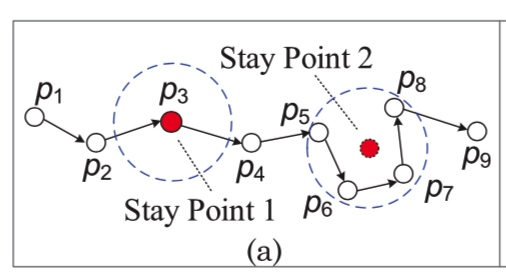
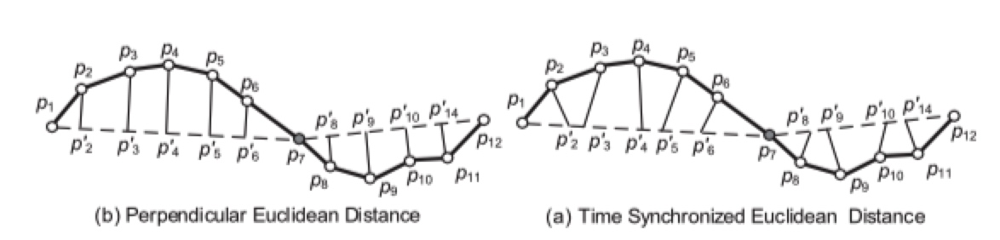
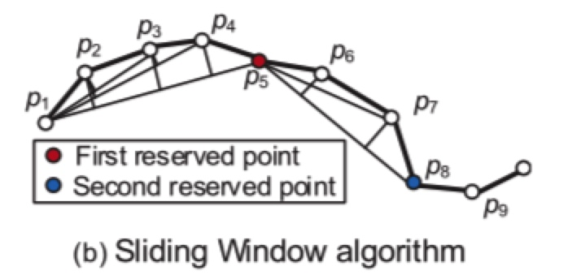
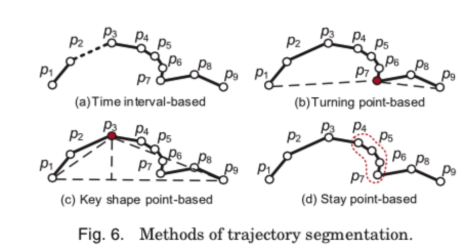

所属 Topic：轨迹分析 · 类型：方法
1.trajectory preprocessing#
- noise filtering
- stay point detect
- trajectory compression
- trajectory segmentation
1. nosie filtering#
(1) 均值/ 中位数 平滑
一种简单的方法是使用一个均值滤波器来平滑噪声。对于测量到的点𝑧𝑖,对真正的点的估计是𝑧𝑖及其n-1个前驱的平均值.均值滤波器可以看作是一个滑动窗口,覆盖了𝑧𝑖 的时间相邻值.
(2) 卡尔曼滤波，粒子滤波
不光考虑轨迹(x,y), 还考虑了在x，y方向上的速度vx，vy。不考虑速度的相当于是

考虑速度的相当于是：

也就是
(3) 删除法
上面两种是对点进行估计，删除法是用异常点检查的方法找到异常点，然后直接删除。
一种方式就是计算从pi -> pj点的速度，超过一定阈值的认为是异常值。
2. stay point detect#
停留点一般有两种情况：
- 单一点。一个人长时间驻足在一个点，这种情况相对较少
- 驻留区域，一个人长时间在一个小范围内活动

驻留点发掘后，可以将原来的轨迹(x,y,t) 数据 转为地点 (place, delta_t) 数据
停留点检测算法：
3. trajectory compression#
轨迹压缩主要是为了在保证一定精度的条件下，减少数据的存储成本。
为了衡量压缩的损失，需要测度压缩后的轨迹与原始轨迹的距离度量。距离的度量有两种方式：
(1) 垂直距离
(2) 时间同步距离
比如下面的例子，将一条有12个点的轨迹压缩到3个点p1，p7，p12。 垂直距离就是直接做点到直线的垂线，而时间同步距离就是假设这个人在p1p7上是匀速行驶的，按照时间间隔为权重划分其他点对应的距离。

压缩方法大致分为两大类别：
(1) offline compression
即给定一条轨迹，需要生成一个一定误差范围内的近似轨迹。这个问题类似于line simplification问题。一个经典的算法就是 Douglas-Peucker
算法描述如下:
（1）在曲线首尾两点A，B之间连接一条直线AB，该直线为曲线的弦；
（2）得到曲线上离该直线段距离最大的点C，计算其与AB的距离d；
（3）比较该距离与预先给定的阈值threshold的大小，如果小于threshold，则该直线段作为曲线的近似，该段曲线处理完毕。
（4）如果距离大于阈值，则用C将曲线分为两段AC和BC，并分别对两段曲线进行1~3的处理。
（5）当所有曲线都处理完毕时，依次连接各个分割点形成的折线，即可以作为曲线的近似。
注意DP算法中需要计算点到直线的垂直距离，这里可以使用海伦公式。假设一个三角形三边长度分别是a,b,c，则其面积计算公式可写成
s=\sqrt{p(p-a)(p-b)(p-c)}， 其中p是半周长p=(a+b+c)/2
除了DP方法之外，还有
- TD-TR（Top-Down Time-Ratio）算法
DP是考虑的垂直距离，TDTR是考虑的时间同步距离， - Bellman算法
动态规划的方法
(2) online compression
online-compression，即数据会源源不断过来，无法提前预知轨迹点数。来了个新点之后决定是否保留的过程。方法大致有两大类
- window-based algorithm： sliding window algorithm，open window algorithm
滑动窗口：从p0开始，依次看p0pi的长度，如果没超过阈值则舍弃，否则将其纳入。比如下面例子中的p5是第一个超过阈值的，p5纳入后，再以p5为开始点继续进行。

开放窗口：滑动窗口是选择最后一个带来超过阈值的点作为新的起点，而开放窗口是选择线段内误差最大的点。
比如p5超过阈值后，看p2-p4这些点中到p1-p5直线的误差哪个最大，因此p3会被选上。
- 依赖物体移动的速度和方向
依据给定的一个阈值，以及上两次的位置，定义一个safe area，如果后续来的点在该safe area之内则认为是多余的被忽略。
compression with semantic meaning.
有些轨迹上是包含了用户的驻足点信息的，比如游览景区。这些点的信息量要比一般走路的信息量大。针对这种情况的压缩，chen[2009] 提出了一个TS(trajectory simplification)算法。既考虑整体的轨迹形状也考虑这些import points。
4. trajectory segmentation#
轨迹切分主要是为了研究的方便。比如可以按照如下的方法进行切分：

这些切分需要结合实际的研究目的和场景。可以按照时间切分，转折点切分、驻留点切分。还有一些研究室研究人们乘坐交通工具的，可以按照乘坐方式分。
除此之外，还有基于轨迹点密度进行的轨迹分割：一般都基于密度聚类算法的改进算法来进行检测，如：K-中值算法，DJ-Cluster算法，cb_swot算法，MSN(Move-Stop-Noise)算法等。
5. map matching#
这里也有很多研究，简单的说下，就是讲坐标点构成的路径和地图上的路线进行match。方法有geometric，概率建模的，以及其他的一些方法。
根据考虑的抽样点数，可以分为local/incremental 和global的方法。
参考#
paper：郑宇2015. trajectory data mining: an overview
https://www.cnblogs.com/xueqiuqiu/p/7635516.html?utm_source=debugrun&utm_medium=referral
均值，中位数平滑，滤波器
知乎：https://zhuanlan.zhihu.com/p/51976835 应该是翻译的ppt